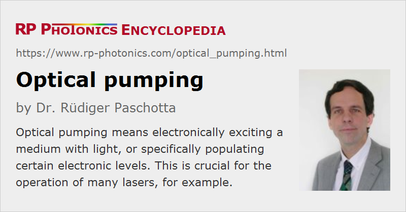

Optical Pumping
Definition: electronically exciting a medium with light, or specifically populating certain electronic levels
German: optisches Pumpen
Categories: lasers, quantum optics, methods
How to cite the article; suggest additional literature
Author: Dr. Rüdiger Paschotta
Optically pumping some medium essentially means to inject light in order to electronically excite the medium or some of its constituents into other (usually higher-lying) energy levels. In the context of lasers or laser amplifiers, the goal is to achieve a population inversion in the gain medium and thus to obtain optical amplification via stimulated emission for some range of optical frequencies. (The width of that range is called the gain bandwidth.) In other cases, such as in spectroscopic measurements, the goal can be to selectively populate a specific electronic level (e.g. some hyperfine sublevel), which does not necessarily have an energy well above the ground state.
Optical pumping processes can often be described with rate equation modeling. However, this disregards some aspects of the quantum nature of the atom–photon interaction. More comprehensive physical models exist which can also describe coherent phenomena such as Rabi oscillations.
Optically Pumped Lasers
Various types of lasers can be optically pumped:
- The most common optically pumped lasers are doped-insulator solid-state lasers. As the host medium (a laser crystal, glass or piece of ceramic) is electrically insulating, optical pumping is the only way to supply the laser-active ions (e.g. rare earth ions) with energy. See Figure 1 as an example.
- Semiconductor lasers are in most cases electrically pumped, but optical pumping can have certain advantages. In the case of vertical external cavity surface-emitting lasers (VECSELs) it allows for a laser output with very high brightness (high power combined with high beam quality). In other cases, optical pumping is sometimes used for testing purposes, e.g. when new semiconductor compositions are investigated. Optically pumped semiconductor gain media generally have a simpler structure than their electrically pumped cousins.
- In rare cases, gas lasers (particularly alkali vapor lasers) are optically pumped.
Common types of optical pump sources are:
- discharge lamps (→ lamp-pumped lasers)
- laser diodes (→ diode-pumped lasers)
- other types of lasers or laser sources
Examples of the latter case are titanium–sapphire lasers pumped with frequency-doubled solid-state lasers, and dye lasers pumped with gas lasers.
A requirement for achieving a high power conversion efficiency in an optically pumped laser is that the pump light is efficiently absorbed in the gain medium. This can be the case if the gain medium is sufficiently long, has a high doping concentration, and a sufficiently wide optical frequency range for the pump light. In some cases, the pump absorption efficiency can be increased by arranging for multiple passes of the pump light through the gain medium. This technique is often used e.g. in thin-disk lasers.
A frequently used alternative to optical pumping is electrical pumping, applied particularly to laser diodes and gas lasers.
Using Multiple Electronic Levels
In the simplest case, the optically pumped medium absorbs light, and each absorbed photon excites one atom or ion into a higher-lying electronic level. The energy difference of the involved electronic levels must match the photon energy of the pump light. Once some degree of excitation of the medium has been achieved, the same kind of light can also cause stimulated emission, bringing excited atoms or ions back to the lower level. For that reason, a medium with a simple two-level scheme cannot reach a population inversion.
Optical pumping in lasers involves at least three different energy levels. In the simplest case, laser-active ions are pumped from their ground state to a higher-lying level, from where they undergo a quick radiative or non-radiative decay into an excited level with somewhat lower energy. As pump light cannot cause stimulated emission from this level down to the ground state (due to the too high photon energy), a population inversion can be achieved for a sufficiently high pump intensity. By introducing a fourth energy level, one can obtain a four-level laser system, where the laser transition involves two intermediate levels. If the lower level population is kept small due to a quick decay to the ground state, population inversion can be achieved even when only a tiny fraction of the ions is excited. The article on four-level and three-level gain media explains the details.
In-band Pumping
Solid state laser gain media often exhibit slightly non-degenerate Stark level manifolds. Due to the energy variations within each manifold, optically pumped laser operation is possible even with only two involved manifolds: ions are pumped from the lower manifold (usually the ground-state manifold) to some higher manifold, and the laser transition directly leads from there back to the lower manifold, with no intermediate manifolds.
This pump scheme, called in-band pumping, can be used with various laser-active ions:
- Ytterbium-doped gain media exhibit only two Stark level manifolds, so there is no other option than in-band pumping.
- Erbium-doped gain media can be in-band-pumped, using the lowest two levels (4I15/2 and 4I13/2). This means that e.g. an erbium-doped fiber amplifier is pumped around 1450 nm while amplifying around 1550 nm. Similarly, there are Er:YAG lasers which are pumped with an erbium-doped fiber laser or amplifier, and emitting at 1645 nm.
- The same scheme can also be applied e.g. to thulium-doped media.
The term in-band pumping is also often used in cases where the laser-active ions are pumped from the ground-state manifold (not being the lower laser level) directly into the upper laser level. For example, this happens when a neodymium-doped laser crystal is pumped around 0.88 μm.
In-band pumping often leads to a small quantum defect, but also often to significant effects of reabsorption from the lower laser level (→ quasi-three level behavior). Also, the achievable degree of excitation (and thus the laser gain) can be limited by stimulated emission caused by the pump light. A somewhat shorter pump wavelength may mitigate the latter problem, but this can decrease the pump absorption efficiency.
Side Pumping Versus End Pumping
In an optically pumped laser, pump light can be injected into the gain medium from different directions. Side pumping means that the light is injected in directions which are roughly perpendicular to that of the laser beam. In the case of end pumping, the pump light is approximately collinear with the laser beam. The pump geometry has implications for the required beam quality (see below), but also the achieved power conversion efficiency, the laser gain, and the laser beam quality.
Requirements on the Pump Light
Pump light for optical pumping has to fulfill a number of requirements:
- The optical spectrum of the pump light must be suitable. Ideally, all the photons should have a suitable energy for the wanted electronic transitions. However, certain laser-active ions (e.g. neodymium ions) can also be pumped with fairly broadband light e.g. for flash lamps or arc lamps, albeit with a strongly reduced power conversion efficiency.
- The pump intensity must be sufficiently high. Lasers are often pumped with intensities of the order of the saturation intensity of the laser transition, but four-level lasers can also be operated with lower pump intensities.
- Depending on the geometry, there can be more or less stringent requirements on the pump beam quality. This applies mostly to end-pumped lasers.
- In some cases, the polarization state of the pump light is also important. Some non-isotropic gain media, such as Nd:YVO4, exhibit very different levels of absorption for different polarization directions. In spectroscopy, circularly polarized light is sometimes required for populating certain hyperfine levels.
- The intensity noise of the pump source should not be too large, because at least its low-frequency components can be transferred to the laser output.
Optical Pumping in Fundamental Physics
Techniques of optical pumping are also used outside the area of laser physics, often in fundamental research. For example, various methods of laser cooling essentially depend on optical pumping of atoms or ions, for example suspended in an optical trap. In many cases, certain selection rules play a vital role, which reflect principles like the conservation of angular momentum: the absorption of photons of circularly polarized light must accordingly change the angular momentum of the atoms, i.e., it must lead to final states having correspondingly modified angular momentum. Therefore, it is possible, for example, to selectively pump certain states within a manifold of states having essentially the same excitation energy. In many cases, such processes involve multiple steps of optical pumping and spontaneous emission until the final target states are largely populated.
Interestingly, optical pumping can reduce the entropy of atoms or ions; such processes are associated with an increase of entropy of the light field, such that the total entropy is never decreased and in fact often increased.
Optical pumping can also be utilized for isotope separation, because different isotopes of a substance exhibit slightly different transition energies.
Questions and Comments from Users
Here you can submit questions and comments. As far as they get accepted by the author, they will appear above this paragraph together with the author’s answer. The author will decide on acceptance based on certain criteria. Essentially, the issue must be of sufficiently broad interest.
Please do not enter personal data here; we would otherwise delete it soon. (See also our privacy declaration.) If you wish to receive personal feedback or consultancy from the author, please contact him e.g. via e-mail.
By submitting the information, you give your consent to the potential publication of your inputs on our website according to our rules. (If you later retract your consent, we will delete those inputs.) As your inputs are first reviewed by the author, they may be published with some delay.
See also: end pumping, side pumping, pump absorption, Rabi oscillations, diode-pumped lasers, lamp-pumped lasers
and other articles in the categories lasers, quantum optics, methods
|  |
If you like this page, please share the link with your friends and colleagues, e.g. via social media:
These sharing buttons are implemented in a privacy-friendly way!